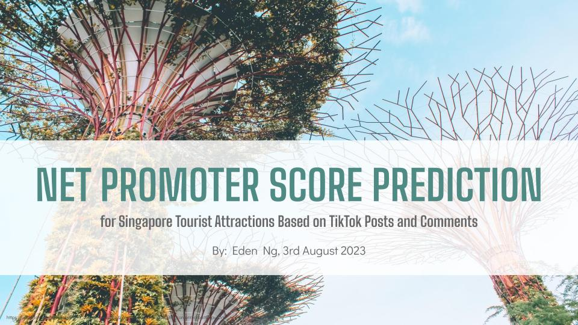
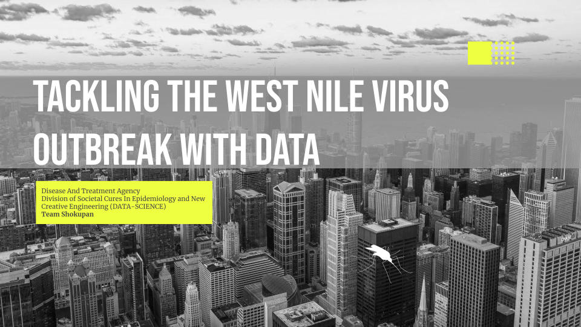
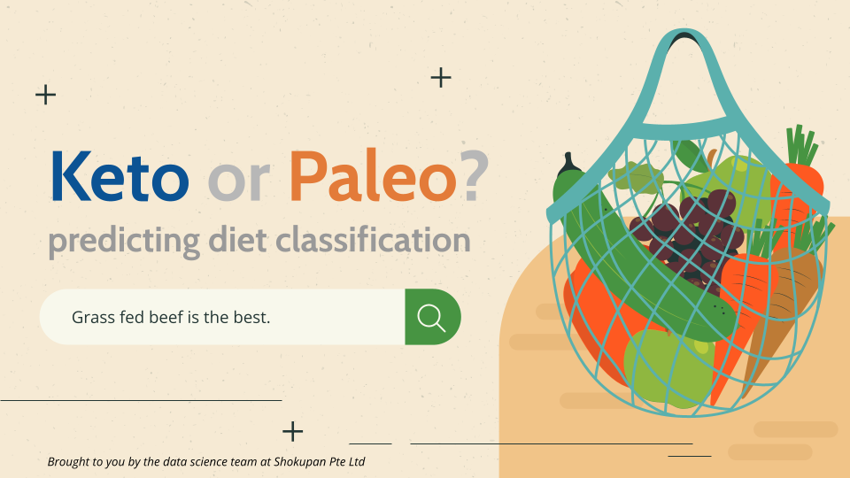

In this project, I trained a RNN model with Keras to predict Net Promoter Score (NPS) for Singapore Tourist Attractions based on TikTok posts and comments.
Try out the deployed model on Streamlit.
(Note: This link becomes inactive periodically. Please contact me to reactivate it.)

Summary:
- Utilized Selenium and BeautifulSoup to collect over 20,000 TikTok videos and comments. Final model utilizing RNN demonstrated a R-squared score of 91%
- Incorporated SpeechRecognition and Tesseract to extract speech-to-text and caption-to-text, respectively
- Utilized spaCy and TextBlob to extract entities (tourist attractions), along with words exhibiting positive or negative sentiment, and their corresponding sentiment scores
- Implemented Keras to train and construct a robust model capable of predicting the sentiment score for each sentence. The model was deployed on Streamlit, allowing users to predict the NPS for each entity using their own dataset
Tensorflow | Keras | Selenium | BeautifulSoup | SpeechRecognition | Pytesseract | opencv | spaCy | TextBlob | Regularized Greedy Forest | XGBoost | NumPy | Pandas | Matplotlib | Seaborn | Python
In this project, I trained a XGBoost model to predict for the presence of West Nile Virus (WNV).
Try out the deployed model on Streamlit.
(Note: This link becomes inactive periodically. Please contact me to reactivate it.)

Summary:
- Analyzed time, weather, location, and mosquito population data from the city of Chicago
- Developed a binary classification model for predicting the presence of West Nile Virus (WNV) in the city
- After several rounds of hyperparameter tuning and testing 7 different models, I settled on XGBoost as the final choice
- Final trained model achieved an ROC-AUC score of 88% in predicting the presence of WNV
- Streamlit application allows users to toggle selected variables and predict the risk of WNV presence according to their specific needs
KMeans | SMOTETomek | AdaBoost | CatBoost | GradientBoost | Logistic Regression | Random Forest | Regularized Greedy Forest | XGBoost | NumPy | Pandas | Matplotlib | Seaborn | Python
In this project, I trained a Logistic Regression model to classify posts from Keto and Paleo subreddits.
Try out the deployed model on Streamlit.
(Note: This link becomes inactive periodically. Please contact me to reactivate it.)

Summary:
- Employed web scraping and Natural Language Processing (NLP) methodologies to gather and analyze a substantial dataset of more than 2,000 user posts sourced from Keto and Paleo subreddits
- Built a binary classifier model, attaining a F1 score of 94% in discerning the subreddit origin of user posts by evaluating their textual content
- Model was deployed on Streamlit, allowing users to predict dietary preferences, view recommended products and gain insights using their own dataset from their own client base
NLTK | TextBlob | Web-Scraping | Logistic Regression | Multinomial Naive Bayes | Bernoulli Naive Bayes | Gaussian Naive Bayes | K-Nearest-Neighbors | Count Vectorization | TFIDF Vectorization | NumPy | Pandas | Matplotlib | Seaborn | Python
In this project, I trained a Ridge Regression model to predict the prices of The Housing & Development Board (HDB) resale flats.
Try out the deployed model on Streamlit.
(Note: This link becomes inactive periodically. Please contact me to reactivate it.)

Summary:
- Analyzed a dataset comprising more than 150,000 data points and 77 features to identify relevant variables using statistical data, SelectKBest and Lasso regression
- Selected variables were used to build a Ridge Regression model, attaining a R-squared score of 90%, which was deployed on Streamlit
- Streamlit application allows users to predict the prices of HDB resale flats by inputting selected variables according to their specific needs
Dython | Folium | Linear Regression | Ridge Regression | Lasso Regression | NumPy | Pandas | Matplotlib | Seaborn | SciPy | Scikit-learn | Pickle | Python